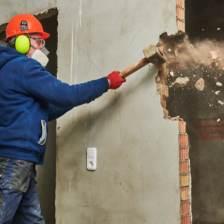
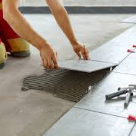
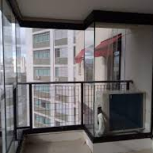
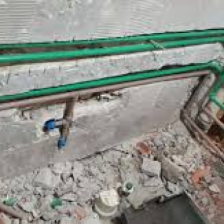
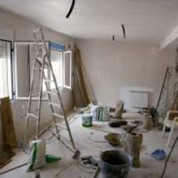

A Norma Técnica NBR 16.280/2015 é um marco importante para garantir a segurança e a integridade de imóveis
residenciais e comerciais durante reformas. Ela estabelece diretrizes específicas para assegurar que as
obras realizadas estejam em conformidade, prevenindo potenciais danos à estrutura do prédio e protegendo os
ocupantes.
Segundo essa norma, a emissão da Anotação de Responsabilidade Técnica (ART) é
obrigatória para determinados serviços de reforma, tanto em áreas comuns quanto privativas de condomínios.
Os laudos de engenharia, elaborados por engenheiros civis especializados e registrados no CREA, são
essenciais para acompanhar a ART, fornecendo clareza sobre a obra ao condomínio.
Esses documentos
são cruciais não apenas para atender às exigências legais, mas também para garantir a aprovação dos
condomínios, assegurando que as reformas sigam os padrões de segurança estabelecidos. A norma afasta a
realização de obras por profissionais não qualificados e amadores, privilegiando a expertise
técnica.
Além disso, a NBR 16.280/2015 prevê medidas abrangentes para prevenir a perda de
desempenho das edificações e suas alterações funcionais, incluindo planejamento, análises técnicas,
segurança estrutural, registro documental e supervisão técnica durante todo o processo de reforma. Essas
medidas visam preservar a segurança e a qualidade dos imóveis, garantindo a tranquilidade dos moradores e
usuários.




